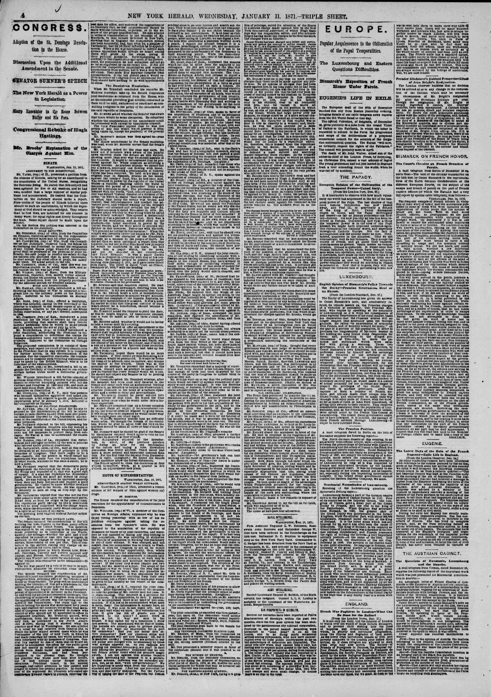

The American Annexation FightLa lucha por la anexión estadounidense
The Dominican Resolution.La resolución dominicana.
The report covers the debate in both chambers on the joint resolution to appoint commissioners to Dominica. In the Senate, Senator Sumner protested against the whole measure as involving a bloody lawsuit, presented General Cabral's proclamation as evidence of civil war in the country, and proposed that the commissioners be required to inquire into that war and into the relations between Dominica and Hayti. In the House, Mr. Cox of New York denounced the scheme as a private, corrupt job, saying the annexation would be that of husks, because the kernels had already gone to private parties. Mr. Hoar of Massachusetts said he did not concur in the idea that respect for the President required them to support the measure, while Mr. Stevenson of Ohio favored acquiring Dominica for its minerals, harbors and fertile soil. A dispatch was read announcing that the Indiana Senate had instructed its senators, and requested its representatives, to vote against annexation. The House agreed to Mr. Ambler's amendment, declaring that nothing in the resolution committed the government to annexation, and then passed the resolution, 123 to 63.
El informe cubre el debate en ambas cámaras sobre la resolución conjunta para nombrar comisionados a Dominica. En el Senado, el senador Sumner protestó contra toda la medida por entrañar un pleito sangriento, presentó la proclama del general Cabral como prueba de la guerra civil en el país y propuso que se requiriera a los comisionados investigar esa guerra y las relaciones entre Dominica y Haití. En la Cámara de Representantes, el Sr. Cox, de Nueva York, denunció el plan como un negocio privado y corrupto, diciendo que la anexión sería de cáscaras, porque el grano ya había ido a parar a manos privadas. El Sr. Hoar, de Massachusetts, dijo que no compartía la idea de que el respeto al Presidente exigiera apoyar la medida, mientras que el Sr. Stevenson, de Ohio, favoreció adquirir Dominica por sus minerales, puertos y suelo fértil. Se leyó un despacho que anunciaba que el Senado de Indiana había instruido a sus senadores, y solicitado a sus representantes, votar contra la anexión. La Cámara aprobó la enmienda del Sr. Ambler, que declaraba que nada en la resolución comprometía al gobierno con la anexión, y luego aprobó la resolución, por 123 votos contra 63.
San Domingo.Santo Domingo.
San Domingo. by the first direct vote in Dominican history, Báez's Washington errand for arms and money, and the treaty by which 'the usurper pretended to sell his country' for $1.5 million.
El Portland Daily Press publica noticias de Santo Domingo por el primer voto directo en la historia dominicana, la gestión de Báez en Washington en busca de armas y dinero, y el tratado por el que «el usurpador pretendió vender su país» por 1.5 millones de dólares.
A perfect understanding is Said to exist between him and the revolutionary leaders in HaytiSe dice que existe un perfecto entendimiento entre él y el
According to the Springfield weekly Republican on January 15, 1870, President Baez issued a proclamation directing district commandants to arrange a popular vote on the annexation treaty, which was strongly favored in city areas like San Domingo, Porto Platte, and Santiago, but opposed by rural populations fearing subjugation. The newspaper reported that Luperol was at Turks Island awaiting the outcome of the Haytian war, supported by revolutionary leaders who promised their resources against President Baez if they successfully overthrew Salnave. Additionally, the text noted that local resistance to annexation stemmed partly from the plan to admit the region as a territory rather than a state, a condition Gen. Babcock had communicated to Baez as non-negotiable.
Según el Springfield weekly Republican del 15 de enero de 1870, el presidente Báez promulgó un bando ordenando a los comandantes de armas celebrar una consulta plebiscitaria sobre el tratado de anexión, la cual gozaba de amplio favor en urbes como Santo Domingo, Puerto Plata y Santiago, pero hallaba resistencia en los campos por temor a una nueva dominación foránea. El rotativo indicaba que Luperón [Luperol] aguardaba en las islas Turcas el desenlace de la contienda haitiana, respaldado por jefes revolucionarios que empeñaron su concurso bélico contra el presidente Báez si lograban derrocar a Salnave. Asimismo, se señalaba que la oposición interna nacía en parte de la pretensión de anexar el país en calidad de simple territorio y no como Estado de la Unión, condición que el general Babcock transmitió a Báez como innegociable.

The report covers the debate in both chambers on the joint
England’s Recognition of the Dominicans.El reconocimiento de los dominicanos por Inglaterra.
Following public concern over an announcement, English Ambassador Sir John Crampton requested instructions from Earl Russell regarding the Spanish blockade of the Dominican coasts. The English government consulted the legal advisers of the crown, whose opinion was favorable to recognizing the Dominicans as belligerents because Spain was bound by the maritime law of the Treaty of Paris to maintain a real and effective blockade. Earl Russell communicated this legal opinion to the Spanish representative in London, who promptly informed the Spanish government.
A raíz de la inquietud pública ante una proclama oficial, el embajador británico Sir John Crampton solicitó instrucciones a Earl Russell sobre el bloqueo español de las costas dominicanas. El gobierno británico consultó a los asesores jurídicos de la Corona, cuyo dictamen fue favorable a reconocer la beligerancia de los dominicanos, por cuanto España estaba obligada en virtud del derecho marítimo del Tratado de París a mantener un bloqueo real y efectivo. Earl Russell trasladó este dictamen jurídico al representante español en Londres, quien lo puso de inmediato en conocimiento del gobierno de Madrid.
Vera Cruz advices represent the emperor s troops as making considerable progressNoticias de Veracruz presentan a las tropas del emperador haciendo considerable pro
The Springfield weekly Republican reported on January 14, 1865, that news from St. Domingo up to the 4th provided glowing accounts of victories over Spanish troops. The dispatch noted earnest hopes for a speedy peace resulting in Dominican independence, alongside native intentions to fight to the last man and dollar if necessary.
El Springfield weekly Republican reportó el 14 de enero de 1865 que las noticias recibidas de Santo Domingo hasta el día 4 daban cuenta entusiasta de victorias obtenidas sobre las tropas españolas. El despacho manifestaba fervientes anhelos de alcanzar una pronta paz fundada en la independencia dominicana, a la par de la firme resolución patriota de combatir hasta el último hombre y el último centavo de ser necesario.
The State of Europe.El estado de Europa.
The heroic resistance of the Dominicans, the writer says, has shown clearly that they do not want Spanish rule, and Spain, having no intention of making conquests, gives up the sovereignty it bought from Santana and withdraws its troops. The letter hails the outcome as another great triumph of the republican form of government, and of the colored population of the country it calls Dominica, which has conquered its independence against the power that once held nearly all America.
La heroica resistencia de los dominicanos, dice el corresponsal, ha demostrado claramente que no quieren el dominio español, y España, que no tiene intención de hacer conquistas, renuncia a la soberanía que compró a Santana y retira sus tropas. La carta celebra el resultado como otro gran triunfo de la forma republicana de gobierno, y de la población de color del país que llama Dominica, que ha conquistado su independencia frente a la potencia que una vez poseyó casi toda América.
St. Domingo.Santo Domingo.
It recounts that the island stood divided between Dominica and Hayti, that the Haytian government ruled the whole island from 1822 until the Dominicans threw off its authority and formed a republic of their own, and that Spain, which obtained possession again in 1861, met an insurrection it never overcame and now withdraws after heavy losses in men and money. The paper offers the episode as a warning on the unwisdom and injustice of the original sale of the country to Spain.
Recuerda que la isla estaba dividida entre Dominica y Haití, que el gobierno haitiano gobernó toda la isla desde 1822 hasta que los dominicanos se libraron de su autoridad y formaron una república propia, y que España, que volvió a obtener la posesión en 1861, encontró una insurrección que nunca venció y ahora se retira tras grandes pérdidas de hombres y dinero. El periódico ofrece el episodio como advertencia sobre la imprudencia y la injusticia de la venta original del país a España.
The Telegraph reprints a letter from Florence reporting that SpainEl Telegraph reproduce una carta desde Florencia que informa que España
The letter credits the heroic resistance of the Dominicans, who showed that they did not want Spanish rule, and says Spain gives up the sovereignty it bought from Santana and withdraws its troops from the island. It celebrates the independence conquered by the colored population of the country it calls Dominica as a triumph of republican government, won against the power that once possessed nearly all of America.
La carta atribuye el resultado a la heroica resistencia de los dominicanos, que demostraron no querer el dominio español, y dice que España renuncia a la soberanía que compró a Santana y retira sus tropas de la isla. Celebra la independencia conquistada por la población de color del país que llama Dominica como un triunfo del gobierno republicano, ganado frente a la potencia que una vez poseyó casi toda América.
Domingo we learn that the National Convention, Sitting at Santiago de los CaballerosDomingo sabemos que la Convención Nacional, reunida en Santiago de los Caballeros
The newspaper reported that the National Convention sitting at Santiago de los Caballeros adjourned on March 25 after electing a legal government to hold office until ninety days after the country was evacuated by Spanish troops, at which point a congress would meet. The report noted that conditions were tranquil throughout the country.
El rotativo informó que la Convención Nacional reunida en Santiago de los Caballeros clausuró sus sesiones el 25 de marzo tras elegir un gobierno legal que regiría hasta noventa días después de la evacuación del país por las fuerzas españolas, momento en el cual se reuniría un congreso ordinario. El parte consignó que reinaba la tranquilidad en todo el territorio nacional.
Thus the great war against the rebellion, which all lie nationsAsí la gran guerra contra la rebelión, que todas las naciones
According to \1 on April 30, 1865, European monarchies were described as quaking with fear over the growing strength of the United States and its potential impact on Spanish possessions like Cuba and Porto Rico. The article specifically cited a fearful argument presented by the "Conqueror of Africa," which claimed the United States planned to send thousands of freed colored people to St. Domingo to form a negro nationality and army to ultimately attack and destroy Cuba. The newspaper dismissed this theory as a "raving of an imagination entirely possessed by fear," asserting that no dilatory measures would be needed if the United States truly intended to conquer European possessions.
Según \1 del 30 de abril de 1865, las monarquías europeas temblaban de recelo ante el creciente poderío de los Estados Unidos y sus posibles repercusiones en las posesiones españolas de Cuba y Puerto Rico. El artículo citó en particular un medroso alegato esgrimido por el «Conquistador de África», quien aseguraba que los Estados Unidos proyectaban enviar a miles de libertos de color a Santo Domingo a fin de constituir una nacionalidad y un ejército negros con el propósito final de asaltar y arrasar a Cuba. El diario desestimó dicha teoría como el «desvarío de una imaginación presa del pánico», asegurando que los Estados Unidos no necesitarían recurrir a maniobras indirectas si de veras abrigaran el propósito de conquistar posesiones europeas.
Advices from San Domingo to April 9 announce that the Dominican RepublicNoticias de Santo Domingo hasta el 9 de abril anuncian que la República Dominicana
The sessions of the National Convention came to an end in late March, and a decree of amnesty was published, with exceptions that include the high functionaries who took part in the intrigues that produced the annexation, the officers and soldiers who fought under the Spanish flag, and the public writers who opposed the restoration in the newspapers. A Spanish steamer had arrived with the order from Madrid for the evacuation, and the Spanish troops left the island on March 30.
Las sesiones de la Convención Nacional concluyeron a fines de marzo, y se publicó un decreto de amnistía con excepciones que incluyen a los altos funcionarios que participaron en las intrigas que produjeron la anexión, a los oficiales y soldados que lucharon bajo la bandera española y a los escritores públicos que se opusieron a la restauración en los periódicos. Un vapor español había llegado con la orden de Madrid para la evacuación, y las tropas españolas salieron de la isla el 30 de marzo.
SAN DOMINGO.Santo Domingo.
The republic occupies the eastern and larger portion of the island, some 17,500 square miles, with a population estimated at between 120,000 and 200,000. Since the summer of 1863 the Spaniards have been confined to a few seaport towns, and the paper argues that Spain, whose bill before the Cortes admits that the inhabitants were unanimously opposed to her government, is now compelled to withdraw her troops and recognize the independence of the republic.
La república ocupa la porción oriental y mayor de la isla, unas 17,500 millas cuadradas, con una población estimada entre 120,000 y 200,000 habitantes. Desde el verano de 1863 los españoles han estado confinados a unos pocos puertos, y el periódico sostiene que España, cuyo proyecto ante las Cortes admite que los habitantes se opusieron unánimemente a su gobierno, se ve ahora obligada a retirar sus tropas y reconocer la independencia de la república.
Advices from San Domingo announce the re-establishment of the Dominican RepublicNoticias de Santo Domingo anuncian el restablecimiento de la República Dominicana
The National Convention ended its sessions in late March and published a decree of amnesty that excepts, among others, the high functionaries implicated in the intrigues of the annexation, the soldiers who fought against their country under the Spanish flag, and the writers who opposed the restoration in the press. A Spanish steamer brought the order from Madrid for a total evacuation, and the troops embarked on March 30.
La Convención Nacional terminó sus sesiones a fines de marzo y publicó un decreto de amnistía que exceptúa, entre otros, a los altos funcionarios implicados en las intrigas de la anexión, a los soldados que lucharon contra su país bajo la bandera española y a los escritores que se opusieron a la restauración en la prensa. Un vapor español trajo la orden de Madrid para la evacuación total, y las tropas embarcaron el 30 de marzo.
Revolution in Hayti.Revolución en Hayti.
It recalls the fall of President Boyer, the separation of the Dominican Republic in 1844, and some fifteen years of Haitian attacks that the Dominicans always defeated. The writer holds that if the Dominicans remain true to themselves and to their principles of liberty and equality, they will be secure in their independence forever.
Recuerda la caída del presidente Boyer, la separación de la República Dominicana en 1844 y unos quince años de ataques haitianos que los dominicanos siempre derrotaron. El autor sostiene que si los dominicanos se mantienen fieles a sí mismos y a sus principios de libertad e igualdad, estarán seguros en su independencia para siempre.
Domingo correspondent makes a statement of numerous outrages committed on the property and rights of citizens of the United States domiciled in the Dominican republicEl corresponsal de Domingo hace una relación de numerosos ultrajes cometidos contra el
A St. Domingo correspondent for \1 reported that Spanish military forces committed numerous outrages and spoliation against United States citizens and their agricultural, manufacturing, and mining enterprises during the Spanish invasion of the Dominican Republic. Additionally, the Dominican Minister who visited Washington returned home disheartened after being unable to obtain an interview with Mr. Seward to present a statement regarding these Spanish outrages.
Un corresponsal de \1 en Santo Domingo informó que las tropas españolas perpetraron numerosos atropellos y despojos contra ciudadanos estadounidenses y sus establecimientos agrícolas, manufactureros y mineros durante la invasión española a la República Dominicana. Además, el ministro dominicano comisionado a Washington regresó a su patria desalentado tras no lograr concertar una entrevista con el secretario Seward para presentarle un memorial relativo a tales desafueros españoles.
An editorial hails the triumph of the Dominican Republic over SpainUn editorial celebra el triunfo de la República Dominicana sobre España
It describes the republic as occupying the eastern part of the island, some 17,500 square miles with a population put at between 120,000 and 200,000, recalls that Santana sold San Domingo to Spain, and notes that the Spaniards, confined since 1863 to a few seaport towns, have been compelled to withdraw and to recognize the independence of the country.
Describe la república ocupando la parte oriental de la isla, unas 17,500 millas cuadradas con una población estimada entre 120,000 y 200,000 habitantes, recuerda que Santana vendió Santo Domingo a España y señala que los españoles, confinados desde 1863 a unos pocos puertos, se han visto obligados a retirarse y a reconocer la independencia del país.
The Herald quotes a St. Jago paper for news that Monte CristiEl Herald cita un periódico de Santiago de Cuba con la noticia de que Monte Cristi
The steamer Mexico, on her way from St. Thomas, touched at both places and reported them empty; at Santo Domingo about three hundred persons wished to leave in her but wanted the means to pay their passage, about three thousand Spanish soldiers yet remained, and nothing was known of the result of the commission sent by the government of the republic to treat with the Spaniards.
El vapor México, en ruta desde Santo Tomás, tocó ambos lugares y los encontró vacíos; en Santo Domingo unas trescientas personas deseaban salir en él pero carecían de medios para pagar el pasaje, aún quedaban unos tres mil soldados españoles y nada se sabía del resultado de la comisión enviada por el gobierno de la república para tratar con los españoles.
People At first the leading Spaniards were pleased with the prospectAl principio, los principales españoles estaban complacidos con la perspectiva
The \1 reported that following the capture of Santiago, Molica, and San Cristoval by rebels, Spain retained control over only a few fortified locations while the Dominican republic held the rest of the country from its seat of government in Santiago. Spanish garrisons were enclosed in Samana for two years and are now leaving the territory they failed to subjugate. Additionally, once the Dominican government regained possession of its entire territory (aside from Spain's fortified exceptions), it sent an envoy to the United States regarding the protection of U.S. citizens.
\1 informó que, tras la toma de Santiago, Moca y San Cristóbal por los insurrectos, España solo conservaba el dominio de contados puntos fortificados, mientras que las autoridades de la República Dominicana controlaban el resto de la nación desde su sede gubernativa en Santiago. Las guarniciones españolas permanecieron cercadas en Samaná durante dos años y evacuaban finalmente el territorio que no pudieron someter. Asimismo, tan pronto como el gobierno dominicano recuperó el control de casi toda la geografía patria (salvo las plazas fuertes españolas), despachó un enviado a los Estados Unidos para tratar lo concerniente a la protección de los ciudadanos estadounidenses.
The Dominican government refuses to sanction the acknowledgmentEl gobierno dominicano se niega a sancionar el reconocimiento
Spain asks the republic to admit that she took possession at the spontaneous desire of the people, that her conduct while there was grandly generous, and that she leaves entirely of her own free will. Rather than sign such an admission, the government faces the blockade General Gandara has declared on all the coasts and harbors of the republic, while his officers talk in the streets of San Domingo of laying the city in ashes.
España pide que la república admita que tomó posesión por deseo espontáneo del pueblo, que su conducta allí fue grandemente generosa y que se marcha enteramente por su propia voluntad. Antes que firmar tal admisión, el gobierno afronta el bloqueo que el general Gándara ha declarado sobre todas las costas y puertos de la república, mientras sus oficiales hablan en las calles de Santo Domingo de reducir la ciudad a cenizas.
Intelligence from the Dominican Republic, whose official documentsNoticias de la República Dominicana, cuyos documentos oficiales
The paper calls the attempt to convert an American state into a European colony a terrible failure, defeated by the brave and unceasing resistance of the Dominicans, and says Spain leaves San Domingo, as she left her other American colonies, because it was beyond her power to stay. As a last shot in the magazine, General Gandara demands from the republic a false and self-accusing acknowledgment that Spain came at the people's desire and behaved with generosity while there.
El periódico califica el intento de convertir un estado americano en colonia europea como un terrible fracaso, derrotado por la valiente e incesante resistencia de los dominicanos, y dice que España abandona Santo Domingo, como abandonó sus demás colonias americanas, porque estaba más allá de su poder quedarse. Como último cartucho, el general Gándara exige a la república un reconocimiento falso y autoacusatorio de que España vino por deseo del pueblo y se condujo con generosidad mientras estuvo allí.
Under the head "Abandonment of St. Domingo," intelligence from the Dominican RepublicBajo el título «Abandono de Santo Domingo», noticias de la República Dominicana
By the act of the Spanish Cortes of May 1, 1865, the military occupation of the island was formally abandoned. The attempt to convert an American state into a European colony had been made a terrible failure by the brave and unceasing resistance of the Dominicans, and Spain leaves San Domingo as she left her other American colonies, because it was beyond her power to stay.
Bajo el título «Abandono de Santo Domingo», se informan noticias de la República Dominicana cuyos documentos oficiales han sido presentados ante el Departamento de Estado. Por la ley de las Cortes españolas del 1 de mayo de 1865, la ocupación militar de la isla fue abandonada formalmente. El intento de convertir un estado americano en colonia europea se había convertido en un terrible fracaso por la valiente e incesante resistencia de los dominicanos, y España abandona Santo Domingo como abandonó sus demás colonias americanas, porque estaba más allá de su poder quedarse.
The lives of the American and English Consuls had been frequentlyLas vidas de los cónsules estadounidense e inglés habían sido con frecuencia
According to the New-York Daily Tribune\1Boletin Oficial of Santiago reported on July 7 that departing Spanish troops were taking Dominican cannon and property, while a few Spanish troops still lingered in St. Domingo because Gen. Gándara and the Dominicans had not agreed on a final evacuation treaty. The Dominican government rejected a drafted treaty because Gándara's preferred language made the agreement appear to be a Spanish concession rather than a surrender, and Gándara subsequently refused to receive new commissioners unless they confirmed the objectionable treaty. Consequently, the Dominican government officially expressed its determination not to yield, signifying that the war had not ceased.
Según el New-York Daily Tribune\1Boletín Oficial de Santiago denunció el 7 de julio que las tropas españolas en retirada se llevaban cañones y propiedades dominicanas, quedando aún remanentes peninsulares en Santo Domingo debido a desacuerdos entre el general Gándara y los dominicanos sobre el tratado definitivo de evacuación. El gobierno dominicano rechazó el borrador del convenio porque los términos exigidos por Gándara hacían figurar el acuerdo como una concesión graciosa de España y no como una capitulación en regla, negándose luego Gándara a recibir nuevos comisionados si no convalidaban dicho documento objetado. Por consiguiente, el gobierno dominicano ratificó oficialmente su firme decisión de no transigir, lo que evidenciaba que las hostilidades no habían concluido.
St. Domingo Affairs.Asuntos de Santo Domingo.
The Spanish Cortes decreed in May that Spain's attempt to subjugate St. Domingo should be abandoned and its forces evacuated, but the evacuation has dragged slowly because Gen. Gandara insists on inserting a treaty clause stating the invasion was undertaken at the people's desire and given up voluntarily. The Dominican Government opposes this clause, leading Gandara to declare that the war must be resumed. Additionally, advices from Hayti report that rebels continue to hold Cape Haytien despite a continual cannonade and blockade by national troops.
Las Cortes españolas decretaron en mayo el abandono del intento de sojuzgar a Santo Domingo y la evacuación de sus tropas, pero la retirada se ha demorado con lentitud debido a que el general Gándara insistió en consignar una cláusula estipulando que la anexión se efectuó por deseo popular y se abandonaba voluntariamente. El gobierno dominicano rechazó tajantemente dicha cláusula, lo que indujo a Gándara a proclamar la reanudación de la guerra. Además, despachos procedentes de Haití daban cuenta de que los facciosos conservaban el dominio de Cabo Haitiano a pesar del incesante cañoneo y del bloqueo impuesto por las tropas del gobierno.
This latter Mtement Is hardly borne oot l>y the reports whichEsta última afirmación apenas se ve respaldada por los informes que
in Santiago. He says that notwithstanding the havoc and spoliations of the Spaniards during their invasion, crops are now coming forward which promise ample subsistence for the inh…
Gandara, the Spanish commander, having withdrawn his troops from the InteriorGándara, el comandante español, habiendo retirado sus tropas del interior
The Daily Ohio Statesman reported on September 2, 1865, that Spanish commander General Gandara withdrew troops from the interior and blockaded the principal ports of the Dominican Republic after the Dominican government refused unreasonable peace treaty demands, prompting Dominicans to commission privateers against Spanish commerce. Additionally, a Kingston, Jamaica correspondent reported that revolutionists were making alarming headway, causing President Geffrard to charter a mail steamer to prepare for his escape, while severe drought and heavy taxes left Jamaican negro laborers in abject poverty and near starvation.
El Daily Ohio Statesman informó el 2 de septiembre de 1865 que el comandante español general Gándara replegó sus fuerzas del interior y bloqueó los puertos principales de la República Dominicana luego de que el gobierno dominicano rechazara desmedidas exigencias para un tratado de paz, lo que indujo a los dominicanos a armar buques corsarios contra el comercio marítimo español. Asimismo, un corresponsal en Kingston, Jamaica, informó que los revolucionarios avanzaban de forma alarmante, lo que llevó al presidente Geffrard a fletar un vapor correo para preparar su fuga, mientras que una rigurosa sequía y excesivos impuestos sumían a los peones negros de Jamaica en la indigencia y la hambruna.
Read the eraLeer la era
In Santo Domingo the same plan read differently. President Buenaventura Báez had bargained with the country as if it were his own property, mortgaging its revenues and offering its bay; the Dominicans who opposed him, Luperón and the exiles among them, fought annexation as the sale of the nation itself. The Senate's refusal settled the question in Washington, though lease schemes around Samaná dragged on until 1874.En Santo Domingo el mismo plan se leía de otro modo. El presidente Buenaventura Báez había negociado con el país como si fuera su propiedad, hipotecando sus ingresos y ofreciendo su bahía; los dominicanos que se le oponían, Luperón y los exiliados entre ellos, combatieron la anexión como la venta de la nación misma. La negativa del Senado cerró la cuestión en Washington, aunque los planes de arrendamiento sobre Samaná se arrastraron hasta 1874.
Two readingsDos lecturas
Notice how rarely the American debate below asks Dominicans what they want. The annexation fight was conducted in Washington newspapers and Senate speeches; the Dominican answer — the Restoration generation's flat refusal to be sold — has to be read between the lines, and against them.Note cuán rara vez el debate estadounidense que sigue pregunta a los dominicanos qué quieren. La lucha por la anexión se libró en periódicos de Washington y discursos del Senado; la respuesta dominicana — la negativa rotunda de la generación de la Restauración a ser vendida — hay que leerla entre líneas, y contra ellas.
DocumentsDocumentos
- Report of the Commission of Inquiry to Santo Domingo, 1871, as reprintedInforme de la Comisión de Investigación sobre Santo Domingo, 1871, tal como se reimprimió · New National Era · April 13, 187113 de abril de 1871